Vermeer
Johannes van der Meer, da cui deriva la firma «I V Meer», solitamente abbreviato in Jan Vermeer è stato un pittore olandese, esponente di spicco del secolo d'oro olandese.
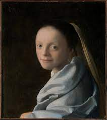 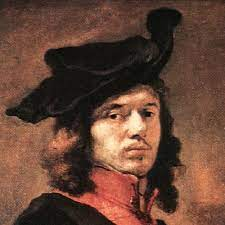 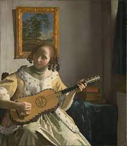 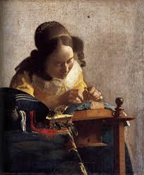 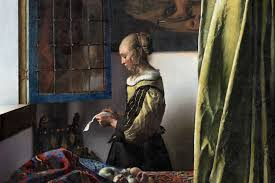 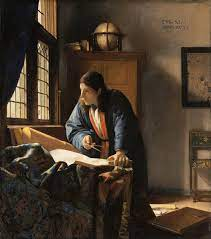Johannes van der Meer, da cui deriva la firma «I V Meer», solitamente abbreviato in Jan Vermeer è stato un pittore olandese, esponente di spicco del secolo d'oro olandese.
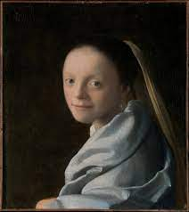 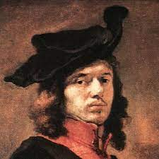 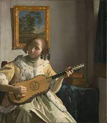 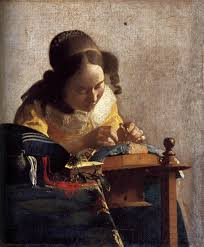 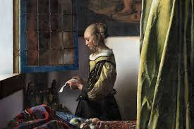 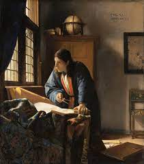